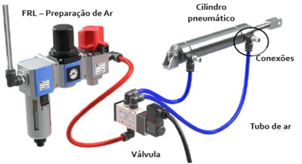

Fundamentos da Pneumática
Introdução
O que é Pneumática?
A pneumática é o ramo da física e da engenharia que faz uso de gás ou ar pressurizado para gerar e transmitir força e movimento. Derivada da palavra grega pneuma (que significa "fôlego" ou "ar"), esta tecnologia é amplamente empregada na indústria moderna para automatizar processos produtivos, oferecendo uma solução robusta, segura e de fácil manutenção para o acionamento de máquinas e equipamentos.
Princípio Físico Básico
O funcionamento dos sistemas pneumáticos baseia-se na compressibilidade dos gases. O ar ambiente é captado, comprimido (reduzindo seu volume e aumentando sua pressão) e armazenado. Quando liberado de forma controlada através de válvulas, a energia potencial do ar comprimido é convertida em energia cinética (movimento) por meio de atuadores.

Fonte: mtibrasilVantagens e Limitações
A escolha da pneumática em detrimento de sistemas hidráulicos ou puramente elétricos depende das necessidades específicas do projeto. Abaixo estão os principais pontos de avaliação:
| Vantagens (Prós) | Limitações (Contras) |
|---|---|
| Disponibilidade: O ar é abundante, gratuito e inesgotável. | Compressibilidade: Dificulta a obtenção de velocidades de avanço perfeitamente constantes (ao contrário da hidráulica). |
| Segurança: Não há risco de faíscas ou explosões, ideal para ambientes inflamáveis. | Força Limitada: A pressão de trabalho (geralmente de 6 a 8 bar) limita as forças desenvolvidas em comparação com a hidráulica. |
| Simplicidade: Componentes de fácil compreensão e manutenção relativamente simples. | Ruído: A exaustão do ar comprimido para a atmosfera gera ruído elevado (necessita de silenciadores). |
| Velocidade: Permite movimentos lineares e rotativos de alta velocidade. | Custo de Energia: A compressão do ar consome bastante energia elétrica, exigindo redes sem vazamentos para eficiência. |
Arquitetura de um Sistema Pneumático
Geração, Controle e Atuação
Um circuito pneumático é composto por uma cadeia lógica de componentes que atuam desde a captação do ar até a realização do trabalho final. A estrutura básica pode ser dividida em três grandes blocos: Geração, Controle e Atuação.
Fluxo básico do ar comprimido: Compressor → Unidade FRL → Válvula → Atuador
1. Produção e Tratamento (Geração)
O sistema inicia no Compressor, que eleva a pressão do ar atmosférico. O ar comprimido, quente e úmido, passa por resfriadores e secadores antes de chegar à Unidade de Conservação (FRL).
A unidade FRL é composta por:
- Filtro: Filtra impurezas.
- Regulador: Regula a pressão de trabalho ideal.
- Lubrificador: Quando necessário, adiciona óleo para minimizar o desgaste dos componentes.
2. Elementos de Comando (Válvulas)
As válvulas são o "cérebro" do circuito. Elas podem ser acionadas manualmente, pneumaticamente ou eletricamente (solenoides).
- Válvulas Direcionais: Orientam o fluxo de ar.
- Válvulas de Controle de Fluxo: Ajustam a velocidade dos atuadores limitando a passagem de ar.
- Válvulas de Bloqueio e Pressão: Garantem que o sistema não ultrapasse pressões perigosas.
3. Elementos de Trabalho (Atuadores)
São responsáveis por converter a energia pneumática em trabalho mecânico.
- Cilindros de Ação Simples: Realizam trabalho em apenas uma direção, retornando à posição inicial por ação de uma mola.
- Cilindros de Ação Dupla: Utilizam ar comprimido para realizar movimentos de avanço e retorno.
- Motores pneumáticos: Produzem movimentos rotativos.
Aplicações Industriais
A versatilidade da pneumática permite sua aplicação em praticamente todos os ramos industriais. Ela é fundamental onde movimentos rápidos, repetitivos e limpos são exigidos.
Indústria Alimentícia
Utilizada no envase, dosagem e embalagem. A preferência se dá pela limpeza do sistema, evitando a contaminação dos alimentos por óleos (comum na hidráulica).
Automação Automotiva
Presente nas linhas de montagem, operando robôs, fixadores de peças, parafusadeiras pneumáticas e sistemas de pintura robotizados.
Logística e Movimentação
Esteiras transportadoras, sistemas de separação de pacotes (sorters), elevadores pneumáticos e braços manipuladores (pick-and-place).
Indústria Têxtil
Aplicada no controle de tensão de fios, corte automatizado de tecidos e no acionamento rápido de teares industriais de alta produção.
A Pneumática na Bancada Processo
Na Bancada de Processos SMART 4.0, o circuito pneumático segue a mesma cadeia estudada acima: o ar entra pelo painel de conexões, é tratado, passa pelas válvulas e chega ao atuador pneumático do Eixo Z, que movimenta o manipulador. A bancada também usa vácuo para segurar as lâminas.
| Componente da bancada | Função |
|---|---|
| Entrada de Ar Comprimido | Ponto de alimentação de ar da bancada. |
| Filtro Regulador | Filtra impurezas e regula a pressão de trabalho. |
| Válvula de Bloqueio | Libera ou bloqueia a passagem de ar para o sistema. |
| Válvulas | Comandam o ar para os atuadores; na bancada são acionadas por solenoides ligados ao CLP. |
| Válvula Manual | Válvula de acionamento manual disponível no painel de conexões. |
| Atuador Pneumático do Eixo Z | Movimenta o manipulador na vertical; suas posições são lidas por sensores Reed Switch. |
| Gerador de Vácuo | Produz o vácuo usado pelo manipulador para segurar a lâmina. |
| Vacuostato | Confirma ao CLP que o vácuo foi atingido (pega da lâmina). |
| Saída de Ar para a Próxima Bancada | Permite levar o ar comprimido para outra bancada da linha. |
Manutenção e Eficiência
Embora os sistemas pneumáticos exijam pouca manutenção, a eficiência energética é um ponto crítico. Vazamentos na rede de ar comprimido são o principal ralo de recursos financeiros em uma planta industrial, forçando o compressor a trabalhar mais para manter a pressão da linha.
A manutenção preventiva foca em:
- Drenagem regular de condensado.
- Substituição de filtros.
- Inspeção sistemática de conexões e mangueiras para evitar perdas de pressão.
Conclusão
A pneumática consolidou-se como uma tecnologia indispensável na automação. Quando combinada com a eletrônica (Eletropneumática), permite a criação de máquinas altamente complexas controladas por Controladores Lógicos Programáveis (CLPs), unindo a força física limpa e segura do ar comprimido com a precisão dos sistemas digitais.